library(tidyverse)
library(skimr)5.1 Pré-requis
Comme pour chaque nouveau chapitre, je vous conseille de travailler dans un nouveau script que vous placerez dans votre répertoire de travail, et dans une nouvelle session de travail (Menu Session > Restart R). Inutile en revanche de créer un nouveau Rproject : vos pouvez tout à fait avoir plusieurs script dans le même répertoire de travail et pour un même Rproject. Comme toujours, consultez le livre en ligne du semestre 3 si vous ne savez plus comment faire.
Si vous êtes dans une nouvelle session de travail (ou que vous avez quitté puis relancé RStudio), vous devrez penser à recharger en mémoire les packages utiles. Dans ce chapitre, vous aurez besoin d’utiliser :
- le
tidyverse(Wickham 2022), qui comprend notamment le packagereadr(Wickham, Hester, et Bryan 2022), pour importer facilement des fichiers.csvau formattibble, le packagedplyr(Wickham et al. 2023), pour manipuler des tableaux, et le packageggplot2(Wickham et al. 2022) pour les représentations graphiques. skimr(Waring et al. 2022), qui permet de calculer des résumés de données très informatifs.
Vous aurez également besoin des jeux de données suivants, qu’il vous faut donc télécharger dans votre répertoire de travail :
theme_set(theme_bw())5.2 Corrélation
5.2.1 Principe
Lorsque des variables numériques sont associées ont dit qu’elles sont corrélées. Par exemple, la taille du cerveau et la taille du corps sont corrélées positivement parmi les espèces de mammifères. Les espèces de grande taille ont tendance à avoir un cerveau plus grand et les petites espèces ont tendance à avoir un cerveau plus petit. Le coefficient de corrélation est la quantité qui décrit la force et la direction de l’association entre deux variables numériques mesurées sur un échantillon de sujets ou d’unités d’observation. La corrélation reflète la quantité de dispersion dans un nuage de points entre deux variables. Contrairement à la régression linéaire, la corrélation n’ajuste aucune droite à des données et ne permet donc pas de mesurer à quel point le changement d’une variable entraîne un changement rapide ou lent de l’autre variable.
Ainsi, sur la figure ci-dessous, le coefficient de corrélation entre X et Y est le même pour les deux graphiques : il vaut 1.
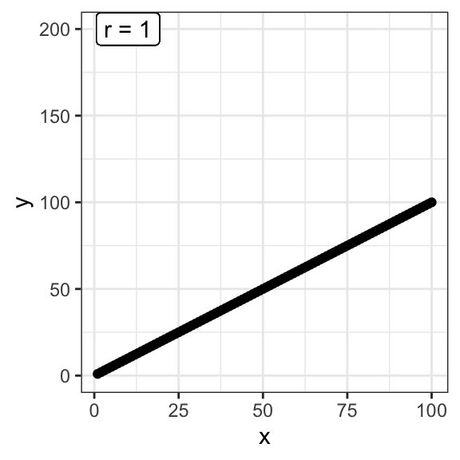

Ici, le coefficient de corrélation (noté \(r\)) vaut 1 dans les deux cas, car tous les points sont alignés sur une droite. La pente de la droite n’influence en rien la valeur de corrélation. En revanche, le degré de dispersion des points autour d’une droite parfaite a une influence :
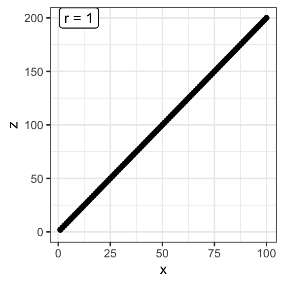
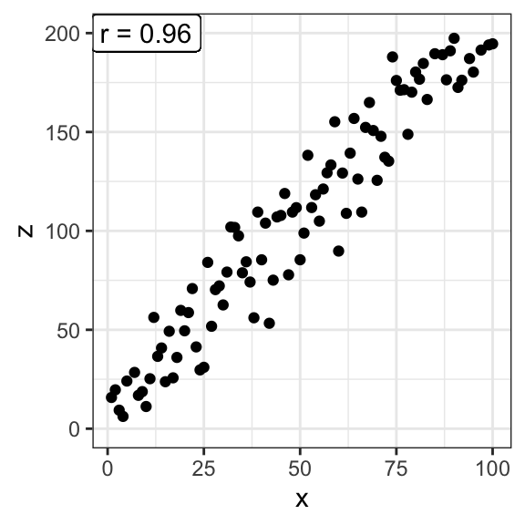
Plus la dispersion autour d’une droite parfaite sera grande, plus la corrélation sera faible. C’est la raison pour laquelle lorsque l’on parle de “corrélation”, on sous-entend généralement corrélation linéaire. Ainsi, 2 variables peuvent avoir une relation très forte, mais un coefficient de corrélation nul, si leur relation n’est pas linéaire :
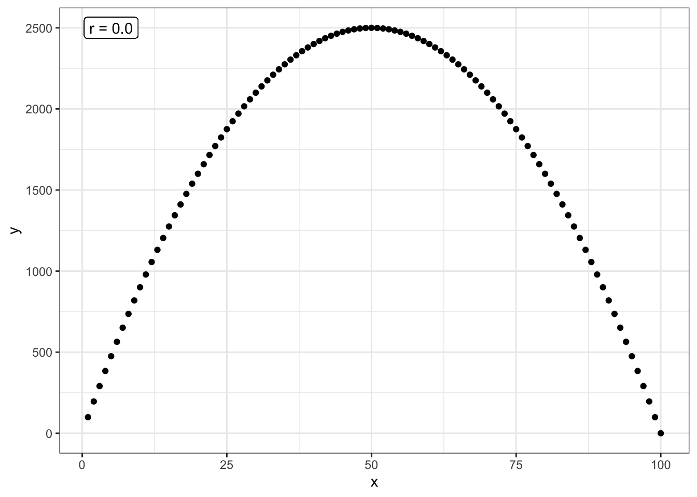
L’exploration graphique de vos données devrait donc toujours être une priorité. Calculer un coefficient de corrélation nul ou très faible ne signifie par pour autant une absence de relation entre les 2 variables numériques étudiées. Cela peut signifier une relation non linéaire. La solution la plus simple pour distinguer une relation telle que celle du graphique précédent, et une absence de relation telle que celle présentée dans le graphique ci-dessous, est l’examen visuel des données :
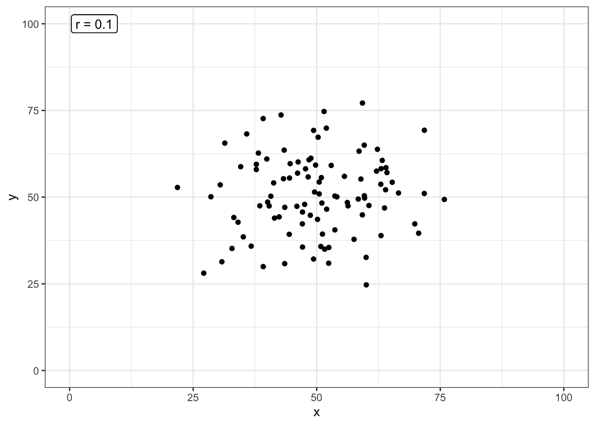
En bref, le coefficient de corrélation \(r\) est compris entre -1 et +1 :
- Une forte valeur absolue (\(r\) proche de -1 ou +1), indique une relation presque linéaire.
- Une faible valeur absolue indique soit une absence de relation, soit une relation non linéaire (la visualisation graphique permet généralement d’en savoir plus).
- Une valeur positive indique qu’une augmentation de la première variable est associée à une augmentation de la seconde variable.
- Une valeur négative indique qu’une augmentation de la première variable est associée à une diminution de la seconde variable.
Important
Le coefficient de corrélation suppose une relation linéaire entre les deux variables numériques examinées. Calculer un coefficient de corrélation très faible peut indiquer :
- une absence de relation entre les variables étudiées
- une relation forte, mais non linéaire entre les variables étudiées
La façon la plus simple de distinguer ces 2 cas de figure très différents est l’exploration graphique des données.
Dans la suite de ce chapitre, nous allons voir comment calculer le coefficient de corrélation entre 2 variables numériques1, et puisque nous travaillons avec des échantillons, ce calcul sera nécessairement entaché d’incertitude. Tout comme la moyenne ou la variance d’un échantillon, la corrélation est un paramètre des populations dont nous ne pourrons qu’estimer la valeur. Toute estimation de corrélation devra donc être encadrée par un intervalle d’incertitude, généralement, il s’agit de l’intervalle de confiance à 95% de la corrélation. Enfin, outre l’estimation de la valeur de la corrélation et de son incertitude, nous pourrons aussi faire des tests d’hypothèses au sujet des corrélations que nous estimerons. En particulier, nous pourrons tester si la corrélation observée est significativement différente de zéro ou non.
1 Vous aurez compris je pense qu’un calcul de corrélation n’a de sens que si l’on dispose de 2 variables numériques, enregistrées sur les mêmes individus ou unités d’étude. Voir détails à la fin de la Section 5.2.3
5.2.2 Contexte
Les adultes qui infligent des mauvais traitements à leurs enfants ont souvent été maltraités dans leur enfance. Une telle relation existe-t-elle également chez d’autres espèces animales, chez qui cette relation pourrait être étudiée plus facilement ? Müller et al. (2011) ont étudié cette possibilité chez le fou de Grant (Sula granti), un oiseau marin colonial vivant entre autres aux Galápagos. Les jeunes laissés au nid sans attention parentale reçoivent fréquemment la visite d’autres oiseaux, qui se comportent souvent de manière agressive à leur encontre. Les chercheurs ont compté le nombre de ces visites dans le nid de 24 poussins dotés d’une bague d’identification individuelle. Ces 24 individus ont ensuite été suivis à l’âge adulte, lorsqu’ils sont à leur tour devenus parents. On cherche donc à savoir s’il existe un lien entre le nombre de visites agressives qu’un individu à reçu lorsqu’il était à l’état de poussin, et un degré d’agressivité mesuré à l’âge adulte.
5.2.3 Importation et mise en forme des données
Les données récoltées par les chercheurs figurent dans le fichier birds.csv. Importez ces données dans RStudio dans un objet noté birds.
birds# A tibble: 24 × 2
nVisitsNestling futureBehavior
<dbl> <dbl>
1 1 -0.8
2 7 -0.92
3 15 -0.8
4 4 -0.46
5 11 -0.47
6 14 -0.46
7 23 -0.23
8 14 -0.16
9 9 -0.23
10 5 -0.23
# … with 14 more rowsLa première colonne de ce tableau indique, pour chaque individu suivi, le nombre de visites reçues au nid de la part d’adultes agressifs lorsqu’ils étaient poussins. La seconde colonne indique, pour ces mêmes individus devenus adultes, le nombre de visites agressives effectuées à des nids d’autres poussins. Ce nombre n’est pas dans la même unité que la première variable car il a été corrigé par d’autres variables d’intérêt pour les chercheurs.
Il manque à ce tableau une variable indiquant le code des individus. Elle n’est pas indispensable, mais la rajouter est une bonne habitude à prendre pour toujours travailler avec des “données rangées”. Puisqu’on dispose de 24 individus, on leur assigne donc un code de 1 à 24 :
birds <- birds %>%
mutate(ID = factor(1:24))
birds# A tibble: 24 × 3
nVisitsNestling futureBehavior ID
<dbl> <dbl> <fct>
1 1 -0.8 1
2 7 -0.92 2
3 15 -0.8 3
4 4 -0.46 4
5 11 -0.47 5
6 14 -0.46 6
7 23 -0.23 7
8 14 -0.16 8
9 9 -0.23 9
10 5 -0.23 10
# … with 14 more rowsPrésentées sous cette forme, les données ressemblent beaucoup à celles du Chapitre 2. Ça n’est pas un hasard : les données dont nous disposons ici sont appariées. Calculer la corrélation entre 2 variables n’a de sens que si chaque unité d’échantillonnage ou d’observation (ici, les individus), fournissent 2 valeurs dont on souhaite mesurer l’association. Dans l’étude sur les effets de la testostérone chez les carouges à épaulettes, on avait, pour chaque individu étudié, 2 mesures d’immunocompétence : une avant et l’autre après l’opération chirurgicale. Ici, chaque Fou de Grant étudié fournit 2 valeurs également. Contrairement à l’étude des carouges à épaulettes, il s’agit de deux variables distinctes (nombre de visites agressives reçues à l’état de poussin d’une part, et comportement agressif à l’âge adulte d’autre part), mais les 2 mesures sont bien liées puisqu’elles sont obtenues chez le même individu.
Pour bien enfoncer le clou, voici un autre exemple. Calculer la corrélation entre la taille des femmes françaises et la tension artérielle des femmes anglaises n’a strictement aucun sens car ce sont des groupes de femmes distincts qui fournissent les mesures de chaque variable. En revanche, sélectionner un groupe de femmes au hasard dans la population mondiale, et examiner, pour chacune des femmes de l’échantillon, à la fois la taille et la tension artérielle est pertinent. On peut alors se poser la question de lien potentiel existant entre ces 2 variables dans la population générale. L’étude de la corrélation entre la taille et la tension artérielle chez les femmes prend alors tout sons sens.
Important
Calculer une corrélation n’a de sens que si les données étudiées sont appariées.
5.2.4 Exploration statistique
Comme toujours, la première chose à faire est d’examiner quelques statistiques descriptives pour se faire une idée de la forme des données et pour repérer les éventuelles données manquantes ou aberrantes.
skim(birds)── Data Summary ────────────────────────
Values
Name birds
Number of rows 24
Number of columns 3
_______________________
Column type frequency:
factor 1
numeric 2
________________________
Group variables None
── Variable type: factor ───────────────────────────────────────────────────────
skim_variable n_missing complete_rate ordered n_unique top_counts
1 ID 0 1 FALSE 24 1: 1, 2: 1, 3: 1, 4: 1
── Variable type: numeric ──────────────────────────────────────────────────────
skim_variable n_missing complete_rate mean sd p0 p25 p50 p75
1 nVisitsNestling 0 1 13.1 7.21 1 8.75 13 15.8
2 futureBehavior 0 1 -0.119 0.374 -0.92 -0.288 -0.1 0.182
p100 hist
1 31 ▅▇▅▃▁
2 0.39 ▂▂▃▂▇Outre le facteur ID que nous venons de créer, nous disposons donc de 2 variables numériques qui ne contiennent pas de données manquantes.
- La variable
nVisitsNestling, qui indique le nombre de visites agressives reçues par les individus suivis lorsqu’ils étaient de jeunes poussins, varie de 1 à 31, pour une moyenne de 13.12, une médiane proche (13) mais un écart-type important. - La variable
futureBehaviorvarie de -0.92 à 0.39, avec une moyenne et une médiane proche de 0 (-0.12 et -0.1 respectivement).
Comme toujours, la fonction skim() nous renseigne sur la tendance centrale, ou position, des variables étudiées (grâce aux moyennes et médianes) et sur la dispersion des données (grâce à l’écart-type et aux “minis-histogrammes”). Ici, si la variable nVisitsNestling semble être à peu près distribuée selon une courbe en cloche (asymétrique), ce n’est pas le cas de la variable futureBehavior qui semble présenter une très forte asymétrie à gauche.
D’habitude, on calcule à ce stade des indices d’incertitude : l’erreur standard de la moyenne ou l’intervalle de confiance de la moyenne. Ici, ça n’est pas utile car les moyennes en elles-mêmes ne nous intéressent pas, et donc leurs incertitudes non plus. C’est en revanche la relation entre les 2 variables numériques qui nous intéresse, en particulier l’intensité et le sens de cette relation. On calcule donc maintenant le coefficient de corrélation linéaire entre les 2 variables :
birds %>%
select(nVisitsNestling, futureBehavior) %>%
cor() nVisitsNestling futureBehavior
nVisitsNestling 1.0000000 0.5337225
futureBehavior 0.5337225 1.0000000Le résultat est fourni sous la forme d’une matrice symétrique :
- Sur la diagonale, les corrélations valent 1 (le coefficient de corrélation d’une variable avec elle-même vaut toujours 1).
- En dehors de la diagonale, on trouve le coefficient de corrélation linéaire entre les 2 variables d’intérêt. Ici, il est positif et vaut 0.534, ce qui est une valeur relativement élevée dans le domaine de la biologie ou de l’écologie. Le signe positif de la corrélation indique que lorsque la première variable augmente, la seconde variable augmente également. Autrement dit, plus les fous de Grant ont été maltraités quand ils étaient poussins, plus ils adoptent un comportement agressif à l’âge adulte.
5.2.5 Exploration graphique
Pour répondre à la question posée et visualiser la relation entre les deux variables numériques, on peut simplement associer chaque variable à un axe d’un graphique et faire un nuage de points. Je vous encourage à jeter un œil à ce chapitre du livre en ligne du semestre 3 pour voir quels types de graphiques sont pertinents dans cette situation.
Afin de savoir si la valeur de \(r\) calculée précédemment dans notre échantillon (0.534) reflète une relation linéaire mais moyenne, ou une relation qui n’est pas vraiment linéaire, nous pouvons donc faire un nuage de points :
birds %>%
ggplot(aes(x = nVisitsNestling, y = futureBehavior)) +
geom_point() +
labs(x = "Nombre de visites reçues par le poussin",
y = "Agressivité à l'âge adulte")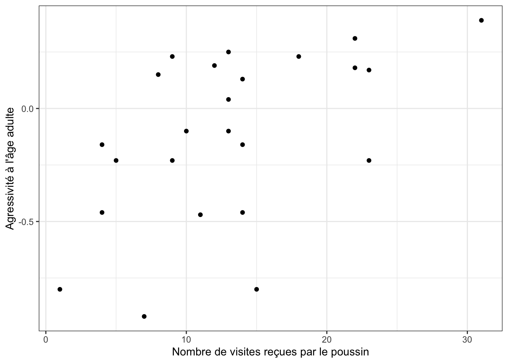
On constate ici que la corrélation moyenne obtenue plus haut est due au fait que les points sont assez dispersés, et non au fait que la relation n’est pas linéaire. On peut donc dire que la relation, si elle existe, n’est pas parfaite. Le comportement des individus devenus adultes semble donc en partie lié au nombre de visites agressives qu’ils ont reçues étant jeunes, mais ce n’est certainement pas le seul facteur influençant leur comportement. Un test d’hypothèses devrait nous permettre de déterminer si la corrélation linéaire observée ici est simplement le fruit du hasard de l’échantillonnage, ou si au contraire la relation observée n’est pas seulement le fruit du hasard, mais bien le reflet d’un lien réel entre les 2 variables.
Si visualiser la distribution des données n’est pas indispensable pour se faire une idée de la nature du lien qui existe (ou non) entre les deux variables, cela sera néanmoins utile pour vérifier les conditions d’application du test de corrélations paramétrique de Pearson. Comme dans les chapitres précédents, nous avons donc intérêt à examiner la distribution de ces 2 variables par le biais d’histogrammes, de graphiques de densité ou de boîtes à moustaches.
birds %>%
ggplot(aes(x = nVisitsNestling)) +
geom_density(fill = "firebrick2", alpha = 0.5) +
geom_rug() +
labs(x = "Visites reçues par le poussin",
y = "Densité")
birds %>%
ggplot(aes(x = futureBehavior)) +
geom_density(fill = "firebrick2", alpha = 0.5) +
geom_rug() +
labs(x = "Agressivité à l'âge adulte",
y = "Densité")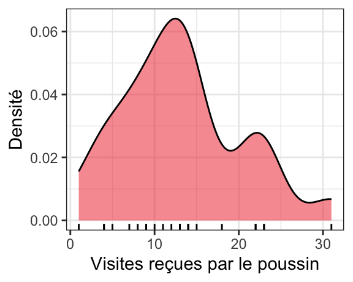
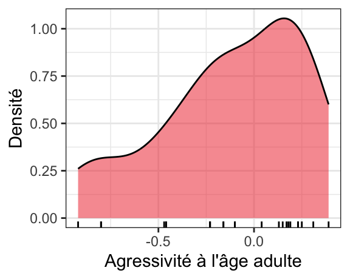
Aucune des 2 variables ne semble suivre parfaitement une distribution Normale. Il faudra réaliser des tests de normalité pour en avoir le cœur net.
5.2.6 Le test paramétrique
5.2.6.1 Les hypothèses
Comme pour la plupart des grandeurs calculées à partir d’un échantillon, la corrélation \(r\) n’est qu’un estimateur de la corrélation qui existe réellement entre ces deux variables dans la population générale. Dans la population générale, la corrélation linéaire est généralement notée \(\rho\). Son estimateur, \(r\) est donc souvent noté \(\hat{\rho}\).
Le test d’hypothèses que nous allons faire maintenant permet de vérifier si le coefficient de corrélation \(\rho\) dans la population générale est différent de 0 ou non. Les hypothèses de ce test sont les suivantes :
- H\(_0\) : le coefficient de corrélation entre les deux variables étudiées vaut 0 dans la population générale (\(\rho = 0\)). Autrement dit, la corrélation observée dans l’échantillon n’est que le fruit du hasard de l’échantillonnage : il n’y a aucun lien entre les 2 variables dans la population générale.
- H\(_1\) : le coefficient de corrélation entre les deux variables étudiées est différent de 0 dans la population générale (\(\rho \neq 0\)). La fluctuation d’échantillonnage ne suffit pas à expliquer la corrélation observée : en plus du hasard de l’échantillonnage, il existe bel et bien un lien entre les 2 variables étudiées.
Ce test est réalisé dans RStudio grâce à la fonction cor.test(), qui permet, selon les arguments renseignés, de réaliser soit :
- le test de corrélation paramétrique de Pearson.
- le test de corrélation non paramétrique de Spearman.
5.2.6.2 Conditions d’application
Comme toujours, on cherche à réaliser un test paramétrique (ici, le test de Pearson) si les données le permettent. Pour avoir le droit de réaliser le test de corrélation de Pearson, il nous faut donc en vérifier les conditions d’application :
- Les individus doivent être indépendants les uns des autres
- Les mesures effectuées doivent suivre une distribution Normale bivariée
Comme toujours, sauf si on a de bonnes raisons de penser le contraire, on considère généralement que si l’échantillonnage a été fait de façon aléatoire, l’indépendance des observations est garantie. La condition de “distribution Normale bivariée” des données est en revanche nouvelle. Elle suppose essentiellement que les 3 critères suivants soient vérifiés :
- La relation entre les 2 variables doit être linéaire. C’est que nous tentons de vérifier visuellement en réalisant un nuage de points des données.
- Sur un graphique représentant une variable en fonction de l’autre, le nuage de points doit avoir une forme circulaire ou elliptique. Là encore, une représentation graphique nous permet d’apprécier cette condition.
- Les 2 variables étudiées doivent suivre une distribution Normale dans la population générale. Avant de faire ce test, il nous faut donc vérifier la Normalité des données pour chacune des 2 variables séparément, à l’aide, par exemple, d’un test de Shapiro-Wilk.
Pour résumer, l’examen du nuage de points permet de vérifier les 2 premières conditions et 2 tests de Shapiro permettent de vérifier la troisième. Pour l’examen du nuage de points, les conditions ne seront pas remplies dans les situations suivantes (voir les exemples du graphique ci-dessous) :
- Le nuage de points a une forme d’entonnoir ou de nœud papillon.
- Des ouliers sont présents (quelques points fortement éloignés du reste des observations).
- Une relation non linéaire existe entre les deux variables.
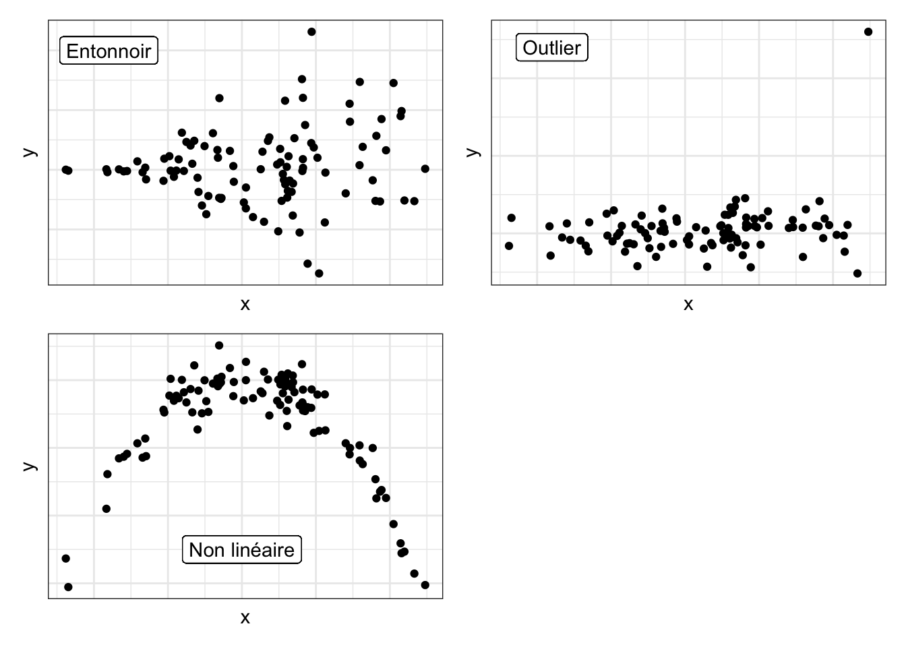
Enfin, si l’une, l’autre ou les deux séries de données ne suivent pas la loi Normale, il faudra faire un test non paramétrique.
Dans notre cas, le graphique Figure 5.1 semble indiquer que les 2 premières conditions d’application sont remplies (la relation entre les deux variable semble globalement linéaire et le nuage de points a globalement une forme elliptique). Il nous reste donc à vérifier la normalité des 2 variables. Les hypothèses nulles et alternatives du test de Shapiro-Wilk sont toujours les mêmes :
- \(H_0\) : les données suivent une distribution Normale dans la population générale.
- \(H_1\) : les données ne suivent pas une distribution Normale dans la population générale.
birds %>%
pull(nVisitsNestling) %>%
shapiro.test()
Shapiro-Wilk normality test
data: .
W = 0.95783, p-value = 0.3965Contrairement à ce que pouvait laisser croire le graphique de densité, la variable nVisitsNestling suit bien une distribution Normale (test de Shapiro-Wilk, \(p = 0.397\)).
birds %>%
pull(futureBehavior) %>%
shapiro.test()
Shapiro-Wilk normality test
data: .
W = 0.91575, p-value = 0.04709En revanche, au seuil \(\alpha = 0.05\), la variable futureBehavor ne suit pas une distribution Normale (test de Shapiro-Wilk, \(p = 0.047\)).
Les conditions d’application ne sont pas vérifiées. En toute rigueur, il nous faudrait donc réaliser ici le test non-paramétrique de Spearman. Nous verrons comment le faire plus tard. Pour l’instant, et pour que vous sachiez comment faire, nous allons faire comme si les conditions d’application du tests paramétrique étaient bel et bien remplies, et nous allons donc réaliser le test paramétrique de Pearson.
5.2.6.3 Réalisation du test et interprétation
La syntaxe du test est très simple :
cor.test(birds$nVisitsNestling, birds$futureBehavior)
Pearson's product-moment correlation
data: birds$nVisitsNestling and birds$futureBehavior
t = 2.9603, df = 22, p-value = 0.007229
alternative hypothesis: true correlation is not equal to 0
95 percent confidence interval:
0.1660840 0.7710999
sample estimates:
cor
0.5337225 Comme expliqué plus haut (et sur la première ligne des résultats du test), il s’agit du test paramétrique de corrélation de Pearson. Comme pour tous les tests examinés jusqu’ici, les premières lignes des résultats fournissent toutes les informations utiles au sujet du test. Ici, on peut dire :
Au seuil \(\alpha = 0.05\), le test de corrélation de Pearson a permis de rejeter l’hypothèse nulle selon laquelle le nombre de visites agressives au nid des poussins et leur futur comportement agressif sont indépendants (\(t = 2.96\), \(ddl = 22\), \(p = 0.007\)).
Ce test prouve donc que \(\rho\) est significativement différent de 0. La valeur de 0.53 observée ici n’est pas due au seul hasard de l’échantillonnage.
Comme toujours, les résultats du test que nous avons réalisé ne nous disent rien de la valeur de la corrélation estimée, ni de son incertitude. Il nous faut pour cela examiner les autres lignes fournies par RStudio lorsque nous faisons ce test et qui relèvent de l’estimation (voir section suivante).
Dernière chose concernant ce test, nous avons fait ici un test bilatéral comme nous le rappelle cette ligne des résultats :
alternative hypothesis: true correlation is not equal to 0
Comme pour les tests de comparaisons de moyennes, il est possible de réaliser un test unilatéral, à condition que cela ait un sens, à condition que nous soyons en mesure d’expliquer le choix de notre hypothèse alternative. La syntaxe est la même que pour les tests de Student ou de Wilcoxon : on utilise l’argument alternative = "less" ou alternative = "greater" au moment de faire le test, selon l’hypothèse que l’on souhaite tester.
Ici, si les hypothèses que nous souhaitons tester sont les suivantes :
- H\(_0\) : le coefficient de corrélation entre les deux variables étudiées vaut 0 dans la population générale (\(\rho = 0\))
- H\(_1\) : le coefficient de corrélation entre les deux variables étudiées est positif dans la population générale (\(\rho > 0\))
On utilise la syntaxe suivante :
cor.test(birds$nVisitsNestling, birds$futureBehavior,
alternative = "greater")
Pearson's product-moment correlation
data: birds$nVisitsNestling and birds$futureBehavior
t = 2.9603, df = 22, p-value = 0.003615
alternative hypothesis: true correlation is greater than 0
95 percent confidence interval:
0.2320921 1.0000000
sample estimates:
cor
0.5337225 Comme pour les autres test unilatéraux, le choix d’une hypothèse alternative aberrante se traduit par une \(p-\)value très forte, généralement égale à (ou très proche de) 1. Dans le cas précis de cette étude, il serait abusif de faire un tel test unilatéral. En effet, les scientifiques suppose que si un lien existe entre les deux variables, la corrélation devrait être positive. Mais avoir observé une relation de cette nature chez d’autres espèces (qui plus est, chez des espèces très différentes) n’est pas suffisant. Car peut-être qu’une relation inverse peut également être observée dans d’autres groupes, et on peut très bien imaginer des mécanismes permettant de l’expliquer. Enfin, avoir observé une corrélation positive dans notre échantillon lors de l’examen préliminaire des données n’est jamais une raison suffisante pour choisir une hypothèse alternative unilatérale. Le choix des hypothèses devrait en effet toujours être effectué avant la collecte des données (voir Section 3.10). Il est donc bien plus honnête de réaliser un test unilatéral, puis, en cas de rejet de \(H_0\), de revenir aux estimation pour interpréter les résultats et conclure. C’est que nous allons voir maintenant.
5.2.6.4 Estimation et intervalle de confiance
Revenons à notre test bilatéral. La section “estimation” des résultats de ce test nous indique que la meilleure estimation du coefficient de corrélation linéaire de Pearson dans la population générale vaut \(\hat{\rho} = 0.533\). C’est la valeur que nous avions calculé à la main avec la fonction cor().
L’intervalle de confiance à 95% de cette valeur estimée est également fourni. La conclusion de cette procédure pourrait donc être formulée de la façon suivante :
Au seuil \(\alpha = 0.05\), le test de corrélation de Pearson a permis de rejeter l’hypothèse nulle selon laquelle le nombre de visites agressives au nid des poussins et leur futur comportement agressif sont indépendants (\(t = 2.96\), \(ddl = 22\), \(p = 0.007\)). La meilleure estimation du coefficient de corrélation dans la population générale vaut \(\hat{\rho} = 0.533\). La vraie valeur dans la population générale a de bonnes chances de se trouver dans l’intervalle [0.17 ; 0.77] (intervalle de confiance à 95%).
Autrement dit, le test a permis de rejeter l’hypothèse nulle et d’affirmer que les 2 variables sont corrélées. L’estimation du coefficient de corrélation et de son intervalle de confiance nous permettent de préciser le sens de cette relation (positive ou négative) et quantifier l’intensité de cette relation. Ici, la relation est bien positive : plus un individu est exposé à des comportements agressif au stade de poussin, plus il aura tendance à reproduire de tels comportements à l’âge adulte. L’incertitude associé à cette estimation de coefficient de corrélation est très grande (IC95% : [0.17 ; 0.77]). Un échantillonnage plus large permettrait de le réduire. Mais les études de ce type sont très coûteuses, notamment en temps, et on est souvent obligé de se contenter des données dont on dispose. La vraie corrélation entre ces 2 variables pourrait donc être relativement faible dans la population générale (0.17), laissant supposer que l’agressivité à l’âge adulte est finalement peu liée à l’agressivité à laquelle les poussins ont été exposés. Mais elle pourrait aussi être très forte (0.77), laissant supposer que l’agressivité à l’âge adulte est fortement liée à l’exposition des poussins à des comportement agressif. On voit bien ici que le seul test de corrélation ne permet pas de trancher dans l’absolu. Tout ce que fait un test, c’est dire si oui ou non on dispose d’assez de preuve pour affirmer qu’une hypothèse nulle est fausse. Le reste de l’interprétation dépend de l’estimation des paramètres de la population générale et de leur incertitude. Quand l’incertitude est faible, on peut être assez affirmatif. Mais quand elle est forte, comme ici, il faut rester prudent quant aux interprétations possibles.
5.2.7 Corrélation et causalité
5.2.7.1 Quelques exemples évidents
On entend souvent que “Corrélation n’est pas causalité”. Cela signifie que la corrélation ne mesure qu’un lien entre 2 variables, mais pas nécessairement que les variations de la première influencent celles de la deuxième. En réalité, si on dispose d’un nombre de variables suffisamment grand, on pourra toujours en trouver 2 qui sont fortement corrélées, sans qu’il n’y ait la moindre relation de causalité entre les deux.
Par exemple, le nombre de morts par noyade aux états unis est corrélé à 66% (\(r = 0.66\)) avec le nombre de films dans lesquels Nicolas Cage joue chaque année. L’un n’est certainement pas la cause de l’autre. De même, le nombre de doctorats accordés chaque année dans le domaine du génie civil est corrélé à 96% (\(r = 0.959\)) avec la consommation de mozzarella. Là encore, on ne voit pas bien quel relation de cause à effet pourrait exister entre ces 2 variables. Ces exemples (et de nombreux autres) peuvent être retrouvés, chiffres à l’appui, sur ce site web.
Pour ces exemples extrêmes, il est évident que la corrélation ne doit pas être interprétée comme une relation de cause à effet. Deux variables fortement corrélées sont simplement deux variables qui varient conjointement, dans le même sens (si la corrélation est positive) ou dans le sens opposé (si la corrélation est négative).
5.2.7.2 Les variables confondantes
Dans certaines situations, il est pourtant tentant de parler de causalité. Par exemple, à la fin des année 1990, des scientifiques ont montré, dans une étude tout à fait sérieuse, que dans les villes de France où l’on consomme le plus de crème solaire, la prévalence des cancers de la peau est également la plus forte. Certains journaux de vulgarisation scientifique se sont empressés de reprendre ce résultat (une corrélation positive entre utilisation de crème solaire et prévalence des mélanomes), et de conclure, à tort, que la crème solaire contribuait donc à donner le cancer de la peau. Pourtant, “corrélation n’est pas causalité” ! Une variable importante, pourtant évoquée dans l’article scientifique, est restée ignorée des journalistes scientifiques de l’époque : l’exposition au soleil. En effet, dans les villes où l’exposition au soleil est la plus forte (les villes de la côte méditerranéenne par exemple), on met en moyenne plus de crème soleil qu’ailleurs, mais on développe aussi plus de mélanomes qu’ailleurs. À l’inverse, dans les villes les moins ensoleillées de France, on utilise beaucoup moins de crème solaire, mais on développe aussi beaucoup moins de mélanomes, simplement parce qu’on est moins exposé au risque.
Dans ce dernier exemple, la variable exposition au soleil est une variable confondante (ou “confounding variable” en anglais). C’est elle qui cause à la fois l’augmentation de la prévalence des mélanomes, et l’augmentation de l’utilisation de crème solaire. On a donc bien 2 relations de causalité, mais pas entre les variables que l’on étudie. La corrélation que l’on observe entre prévalence des mélanomes et utilisation de crème solaire n’est que la conséquence des relations de causalité avec la variable confondante.
La difficulté est ici que l’on ne peut pas savoir à l’avance quelle variable confondante pourrait venir influencer les variables que nous mesurons. Dans le cas de l’agressivité du fou de Grant, des traits génétiques particuliers pourraient par exemple expliquer le lien que nous observons entre nos 2 variables. Imaginons par exemple que la présence de certains allèle dans le génome des individus soit responsables à la fois d’une plus grande agressivité à l’âge adulte, et d’une plus grande autonomie lorsqu’ils sont jeunes. Des poussins possédant ces allèles seront plus autonomes que d’autres, il seront donc laissés plus souvent seuls par leurs parents, ce qui les exposera à des visites plus fréquentes d’adultes agressifs. Sous cette hypothèse, les 2 variables que nous avons étudiées ne sont liées entre elles que parce qu’il existe une relation de causalité entre les traits génétique des individus et chacune des 2 variables étudiées. C’est la raison pour laquelle, lorsque j’ai décrit les résultats de nos tests et des analyses descriptives, j’ai bien fait attention à ne pas dire que les visites agressives auprès des poussins étaient la cause de l’agressivité future des adultes. Je me suis contenté de dire que les variables étaient liées, et que plus un poussin reçoit de visites agressives, plus il aura lui même un comportement agressif à l’âge adulte. Prouver que l’un est la cause de l’autre, ou que l’autre est la conséquence de l’un est impossible avec ce type d’étude.
5.2.7.3 Études expérimentales ou observationnelles
Les exemples que nous venons d’aborder concernent tous des études dîtes observationnelles. À l’inverse des études expérimentales, dans lesquels l’expérimentateur a un certain contrôle des variables confondantes potentielles, ça n’est presque jamais le cas des études observationnelles. Dans l’exemple des fous de Grant, les scientifiques n’ont fait qu’observer des comportements dans une population naturelle. Ils n’ont pas eu la possibilité de vérifier en amont que tous les individus suivis avaient des gènes “normaux” vis-à-vis de l’agressivité. Dans le cas de l’étude sur la crème solaire, les chercheurs n’ont fait qu’observer ce qui se passe à plusieurs endroits de France. Ils n’ont pas pu s’assurer que l’ensoleillement était le même dans toutes les villes sur laquelle a porté cette étude.
Les études expérimentales sont les seules à permettre d’établir des relations de cause à effet. C’est comme cela que par exemple, on peut affirmer qu’un vaccin est efficace ou non contre tel ou tel virus, ou à l’inverse qu’il présente tel ou tel effet secondaire. Pour tester l’efficacité d’un vaccin vis-à-vis d’un virus spécifique, on met en place une étude expérimentale dite “en double aveugle”. Dans la population générale, on va constituer 2 échantillons de patients atteints par le virus. On administrera ensuite le vaccin à l’un des deux groupes, alors qu’on distribuera un placebo (le même vaccin mais sans son composé actif) à l’autre groupe, dans les mêmes conditions. L’étude est “en double aveugle”, car les patients ne savent pas s’ils reçoivent le vaccin actif ou inactif, et les médecins qui administrent le traitement non plus. Cela a pour but de contrôler l’effet placebo.
Dans ces études, la façon dont les 2 groupes de patients sont constitués est sous le contrôle des expérimentateurs. Pour pouvoir établir des relations de causalité (entre administration du vaccin et guérison par exemple) ils doivent s’assurer que les groupes présentent les mêmes caractéristiques vis-à-vis de toutes les variables confondantes potentielles. Par exemple, on peut supposer que les hommes et les femmes ne réagissent pas de la même façon face au virus, ou face au vaccin. Ainsi, placer tous les hommes dans le premier groupe, et toutes les femmes dans le second groupe, serait évidemment une erreur. Car si le premier groupe guérit plus vite, comment peut-on être sûr de la cause de cette guérison ? Le premier groupe a-t-il guérit plus vite parce qu’il était constitué d’hommes, ou parce que les individus ont reçu le vaccin ? Puisque le sexe des individus est une variable confondante potentielle, il est important de répartir équitablement hommes et femmes dans les deux groupes. Et il en va de même pour énormément de variables confondantes potentielles : sexe des individus, âge, niveau d’études, revenu moyen, catégorie socio-professionnelle, etc. Ça n’est qu’en s’assurant que les 2 groupes sont homogènes vis-à-vis de l’ensemble de ces facteurs que les différences éventuelles qui seront observées à l’issue de l’expérience pourront être attribuées sans le moindre doute au traitement étudié : ici, l’administration du vaccin.
Dans le domaine de l’écologie, la plupart des études sont observationnelles, et elles permettent au mieux d’établir des corrélations, des liens entre variables, mais beaucoup plus rarement des liens de causalité formels. Il est toutefois souvent possible, après avoir observé un lien entre variables dans le milieu naturel, de mettre au point des expériences (donc des études expérimentales) permettant de tester des hypothèses précises, y compris des relations de causalité.
Par exemple, dans le milieu marin, en particulier littoral, l’apparition d’imposex chez certains mollusques2 a pu être associé à la présence de tributylétain (TBT) à l’état de trace dans l’eau de mer> lorsque ce phénomène a été décelé, il était impossible d’affirmer que le TBT causait l’apparition d’imposex ; il n’y avait qu’une corrélation. Ça n’est que dans un second temps qu’une étude expérimentale en milieu contrôlé a permis d’établir un lien de causalité. Deux groupes de mollusques identiques en tous points sont placés dans différents bassins. On répartit ensuite de façon aléatoire les bassins en plusieurs lots, et chaque lot de bassin se voit attribuer un traitement : absence de TBT, TBT à la concentration X, TBT à la concentration Y, etc. C’est ce type d’étude expérimentale qui a permis d’établir avec certitude le caractère de perturbateur endocrinien du TBT, de prouver que l’imposex des mollusques pouvait être causé par le TBT, et de connaitre les concentrations à partir desquelles les effets apparaissent.
2 apparitions d’organes génitaux mâles chez des femelles saines par ailleurs
Important
Corrélation n’est pas causalité. Les études observationnelles ne peuvent (presque) jamais établir de lien de causalité formel entre variables. Au mieux, elles peuvent constater que des variables varient conjointement, dans le même sens ou en un sens opposé.
Seules les études expérimentales, dans lesquelles toutes les variables confondantes potentielles sont contrôlées, sont susceptibles de faire apparaître de véritables relations de cause à effet.
5.2.8 L’alternative non paramétrique
Quand les conditions d’application du test de corrélation de Pearson ne sont pas remplies (ce qui était le cas ici, voir Section 5.2.6.2), il faut faire un test équivalent non paramétrique. Le test utilisé le plus fréquemment dans cette situation est le test du \(\rho\) de Spearman (\(\rho\) est la lettre grecque “rho”, et non la lettre “p”). On l’effectue comme le test de Pearson en précisant simplement un argument supplémentaire : method = "spearman" (sans majuscule) :
cor.test(birds$nVisitsNestling, birds$futureBehavior,
method = "spearman")Warning in cor.test.default(birds$nVisitsNestling, birds$futureBehavior, :
Impossible de calculer la p-value exacte avec des ex-aequos
Spearman's rank correlation rho
data: birds$nVisitsNestling and birds$futureBehavior
S = 1213.5, p-value = 0.01976
alternative hypothesis: true rho is not equal to 0
sample estimates:
rho
0.472374 Le test de Spearman est au test de Pearson ce que le test de Wilcoxon est au test de Student, ou ce que le test de Kruskal-Wallis est à l’ANOVA. Il travaille non pas sur les données brutes (ici, les mesures des scientifiques), mais sur des données modifiées, en l’occurrence, sur les rangs des données. La première conséquence évidente est une perte de puissance notable par rapport au test de Pearson. Cette perte de puissance peut être ici observée par le biais de la \(p-\)value plus élevée (donc moins significative) que pour le test précédent. Cela indique que même si la conclusion est la même, on rejette ici l’hypothèse nulle avec moins de confiance que pour le test de Pearson.
Le \(\rho\) de Spearman est équivalent au \(r\) de Pearson calculé sur les rangs des données. Lorsque plusieurs valeurs observées sont égales, plusieurs valeurs ont le même rang, ce qui cause l’apparition du message d’avertissement suivant :
Impossible de calculer la p-value exacte avec des ex-aequos
Ce message est sans conséquence tant que la \(p-\)value du test de Spearman est éloignée du seuil \(\alpha\) (ce qui est le cas ici). Mais quand \(p \approx \alpha\), il faut être particulièrement prudent quant à l’interprétation qui est faite des résultats.
Enfin, comme pour le test de Pearson, il est possible de réaliser un test de Spearman unilatéral en utilisant l’argument alternative = "less" ou alternative = "greater". Les précautions à prendre pour utiliser ce genre de test sont toujours les mêmes.
5.3 Exercices
5.3.1 Canis lupus
En 1970, le loup canis lupus a été éradiqué en Norvège et en Suède. Autour de 1980, un couple de loups, originaire d’une population plus à l’Est, a fondé une nouvelle population en Suède. En l’espace de 20 ans, cette population comptait approximativement 100 loups. Il y a toutefois fort à craindre qu’une population fondée par un si petit nombre d’individus souffre de consanguinité. Liberg et al. (2005) ont compilé les informations sur la reproduction dans cette population entre 1983 et 2002, et ils ont pu reconstruire le pédigrée des individus la composant. Ils ont ainsi été en mesure de déterminer avec précision le coefficient individuel de consanguinité dans 24 portées de louveteaux. Pour mémoire, le coefficient individuel de consanguinité vaut 0 si ses parents ne sont pas apparentés, 0.25 si ses parents sont frères et sœurs issus de grands-parents non apparentés, et plus de 0.25 si les associations consanguines se répètent depuis plusieurs générations.
On souhaite déterminer si le coefficient de consanguinité est associé à la probabilité de survie des jeunes durant leur premier hiver. Les données de Liberg et al. (2005) sont disponibles dans le fichier loups.csv. La première colonne contient les coefficients de consanguinité et la seconde, le nombre de jeunes de chaque portée ayant survécu à leur premier hiver. Vous analyserez ces données en suivant l’ordre des étapes décrites plus haut. En particulier, vous prendrez soin de :
- Vérifier la qualité des données.
- Mettre les données dans un format approprié si besoin.
- Réaliser une exploration statistique puis visuelle des données.
- Vérifier les conditions d’application d’un test paramétrique.
- Faire le test approprié en posant les hypothèses nulles et alternatives judicieuses.
- Répondre à la question posée en intégrant tous les éléments utiles.
5.3.2 Les miracles de la mémoire
À quel point les souvenirs d’évènements miraculeux sont-il fiables ? Une façon d’étudier cette question est de comparer différents récits de tours de magie extraordinaires. Parmi les tours célèbres, on trouve celui de la corde du fakir. Dans l’une de ses versions, un magicien jette l’extrémité d’une corde d’apparence normale en l’air et cette corde devient rigide. Un garçon grimpe à la corde et finit par disparaître en haut de la scène. Le magicien lui demande de répondre mais n’obtient pas de réponse. Il attrape alors un couteau, grimpe à son tour, et le garçon, découpé en morceaux, tombe du ciel dans un panier posé par terre. Le magicien redescend de la corde et aide le garçon vivant, en un seul morceau et non blessé, à sortir du panier.
Wiseman et Lamont (1996) ont retrouvé 21 récits écrits de ce tour par des personnes ayant elles-mêmes assisté à ce tour. Ils ont attribué un score à chaque description selon le caractère plus ou moins impressionnant de la description. Par exemple, un score de 1 était attribué si le récit faisait état que “le garçon grimpe à la corde, puis il en redescend”. Les récits les plus impressionnants se sont vus attribuer la note de 5 (“le garçon grimpe, disparaît, est découpé en morceaux et réapparaît en chair et en os devant le public”). Pour chaque récit, les chercheurs ont également enregistré le nombre d’années écoulées entre le moment où le témoin a assisté au tour de magie, et le moment où il a consigné son récit par écrit.
Y a-t-il un lien entre le caractère impressionnant (“impressiveness”) d’un souvenir et le temps écoulé jusqu’à l’écriture de sa description (“years”) ? Si oui, cela pourrait indiquer une tendance de la mémoire humaine à exagérer et à perdre en précision avec le temps.
Les données de Wiseman et Lamont (1996) sont disponibles dans le fichier ropetrick.csv. Importez ces données et analysez-les en respectant les consignes de l’exercice précédent.
5.4 Régression linéaire
5.4.1 Principe
La régression linéaire est une méthode qui fait partie de la famille des modèles linéaires, tout comme l’ANOVA. ANOVA et régression linéaires sont en effet deux méthodes très proches, et leur mise en œuvre dans RStudio présente de nombreuses similitudes, tant dans la syntaxe des fonctions que nous utiliserons, que dans la façon de vérifier les conditions d’application.
La régression linéaire est une méthode souvent utilisée pour prédire les valeurs d’une variable numérique (appelée variable expliquée) à partir des valeurs d’une seconde variable 9appelée variable explicative). Par exemple, le nuage de points de la figure ci-dessous montre comment la diversité génétique dans une population humaine locale peut être prédite par sa distance de dispersion depuis l’Est africain en ajustant une droite aux données (d’après Whitlock et Schluter 2015). L’homme moderne est apparu en Afrique et nos ancêtres ont perdu un peu de diversité génétique à chaque étape de leur colonisation de nouveaux territoires.
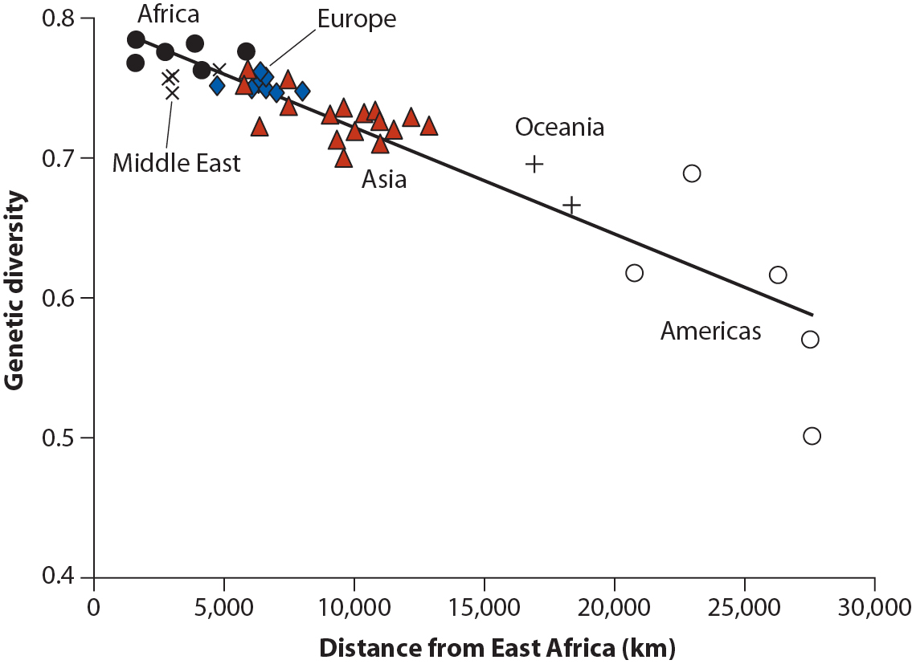
Contrairement à la corrélation, ici, on n’examine pas seulement une éventuelle liaison entre 2 variables numériques : on suppose qu’une variable peut être (en partie) expliquée par une autre. Nous aurons donc à distinguer les variables expliquées (ou dépendantes) qui figureront sur l’axe des ordonnées et seront nos variables prédites, et les variables explicatives (ou indépendantes) qui figureront sur l’axe des abscisses et seront les prédicteurs.
Contrairement à la corrélation qui, comme nous l’avons expliqué en détail, ne permet pas d’aborder les questions de causalité, lorsque l’on s’intéresse à la régression linéaire, on essaie au contraire de prédire ou d’expliquer les variations de la variable expliquée par celles de la variable explicative. En d’autres termes, on considère que les variations de la variable explicative sont au moins en partie la cause des variations de la variable expliquée.
Lorsque l’on s’intéresse à la régression linéaire, on considère que la relation qui lie les deux variables est linéaire, et on souhaite quantifier l’intensité de cette relation (quand la variable explicative augmente d’une unité, de combien d’unité la variable expliquée augmente ou diminue-t-elle ?). Nous allons voir maintenant comment mettre en œuvre cette méthode dans RStudio.
5.4.2 Contexte
Les activités humaines réduisent le nombre d’espèces dans un grand nombre d’écosystèmes à la surface du globe. Est-ce que cette diminution du nombre d’espèces affecte le fonctionnement de base des écosystèmes ? Où est-ce qu’au contraire, les espèces végétales sont majoritairement interchangeables, les fonctions écologique des espèces disparues3 pouvant être assurées par les espèces toujours présentes ?
3 par exemple, la production d’O\(_2\) et la fixation de CO\(_2\), la dépollution des sols, leur fixation, la protection contre les inondations et l’érosion…
Pour tenter de répondre à cette question, Tilman, Reich, et Knops (2006) ont ensemencé 161 parcelles de 9 mètres sur 9 mètres dans la réserve de Cedar Creek (Minesota, USA). Ils ont utilisé un nombre variable d’espèces typiques des prairies et ont mesuré la production de biomasse de chaque parcelle pendant 10 ans. Des lots de 1, 2, 4, 8 ou 16 plantes pluriannuelles (choisies au hasard parmi une liste de 18 espèces possibles) ont été assignés au hasard dans chacune des 161 parcelles. À l’issue des 10 années d’étude, les chercheurs ont mesuré un indice de stabilité de la biomasse en divisant la moyenne des biomasses sur 10 ans, par l’écart-type de ces mêmes biomasses.
5.4.3 Importation et mise en forme des données
Les données de cette expérience sont disponibles dans le fichier plantbiomass.csv.
Comme toujours, on importe les données et on commence par un examen visuel afin de détecter les éventuels problèmes et pour savoir où l’on va.
plant# A tibble: 161 × 2
nSpecies biomassStability
<dbl> <dbl>
1 1 2.01
2 1 1.91
3 1 1.89
4 1 1.86
5 1 1.74
6 1 1.66
7 1 1.57
8 1 1.48
9 1 1.48
10 1 1.45
# … with 151 more rowsCe premier examen nous montre que nous disposons bien de 161 observations pour 2 variables : le nombre d’espèces présentes dans la parcelle pendant 10 ans, et l’indice de stabilité de la biomasse de chaque parcelle. Visiblement, les données sont au bon format, on dispose bien de toutes les variables dont on a besoin et leurs noms sont parlants. Nous n’aurons donc pas besoin de modifier quoi que ce soit dans ces données.
5.4.4 Exploration statistique
Comme toujours, on examine quelques statistiques descriptives de position et de dispersion (voir d’incertitude), pour se faire un idée de la forme des données et pour repérer les éventuelles données manquantes ou valeurs aberrantes.
skim(plant)── Data Summary ────────────────────────
Values
Name plant
Number of rows 161
Number of columns 2
_______________________
Column type frequency:
numeric 2
________________________
Group variables None
── Variable type: numeric ──────────────────────────────────────────────────────
skim_variable n_missing complete_rate mean sd p0 p25 p50 p75 p100
1 nSpecies 0 1 6.32 5.64 1 2 4 8 16
2 biomassStability 0 1 1.41 0.394 0.293 1.12 1.39 1.65 2.76
hist
1 ▇▁▂▁▃
2 ▁▆▇▃▁Ce premier examen nous montre que nous n’avons aucune données manquantes et que l’indice de stabilité a une distribution à peu près symétrique et qu’il varie d’un peu plus de 0.3 à près de 2.8. Pour en apprendre un peu plus, nous pouvons examiner les données en groupes. Ici, la variable nSpecies est bien une variable numérique, mais elle prend seulement quelques valeurs entières (1, 2, 4, 8 ou 16 espèces). Il est donc possible de regarder les valeurs de stabilité de biomasse pour chaque nombre d’espèces dans les parcelles:
plant %>%
group_by(nSpecies) %>%
skim()── Data Summary ────────────────────────
Values
Name Piped data
Number of rows 161
Number of columns 2
_______________________
Column type frequency:
numeric 1
________________________
Group variables nSpecies
── Variable type: numeric ──────────────────────────────────────────────────────
skim_variable nSpecies n_missing complete_rate mean sd p0 p25 p50
1 biomassStability 1 0 1 1.21 0.388 0.728 0.880 1.10
2 biomassStability 2 0 1 1.28 0.360 0.293 1.09 1.32
3 biomassStability 4 0 1 1.31 0.314 0.756 1.10 1.35
4 biomassStability 8 0 1 1.50 0.251 0.928 1.32 1.48
5 biomassStability 16 0 1 1.71 0.403 1.08 1.39 1.66
p75 p100 hist
1 1.48 2.01 ▇▅▃▂▂
2 1.51 2.00 ▁▃▇▇▂
3 1.51 2.00 ▅▇▇▇▁
4 1.61 2.05 ▁▅▇▂▂
5 1.96 2.76 ▇▆▆▃▂Cette fois, on obtient des informations pour chaque groupe de parcelles contenant un nombre d’espèces spécifique. On constate par exemple que la moyenne de l’indice de stabilité de la biomasse augmente très peu entre les catégories 1, 2 et 4 espèces par parcelle, mais que l’augmentation semble plus marquée pour 8 et 16 espèces par parcelle. Tous les écarts-types semblent très proches. Les parcelles avec 1 et 16 espèces en particulier présentent des histogrammes nettement asymétriques.
Comme pour la corrélation, il est inutile ici de calculer des indices d’imprécision. Ça n’est pas la moyenne de ces variables qui nous intéresse, mais la relation entre elles. Nous serons en revanche amenés à calculer des intervalles de confiances à 95% des paramètres de la régression linéaire, puisque ce sont eux qui nous permettront de qualifier (et quantifier) la relation entre les 2 variables.
5.4.5 Exploration graphique
Visualiser les données est toujours aussi indispensable. Ici, comme pour la corrélation, on commence par un nuage de points pour visualiser les données et la forme de leur relation :
plant %>%
ggplot(aes(x = nSpecies, y = biomassStability)) +
geom_point(alpha = 0.5) +
labs(x = "Nombre d'espèces par parcelle",
y = "Indice de stabilité de la biomasse")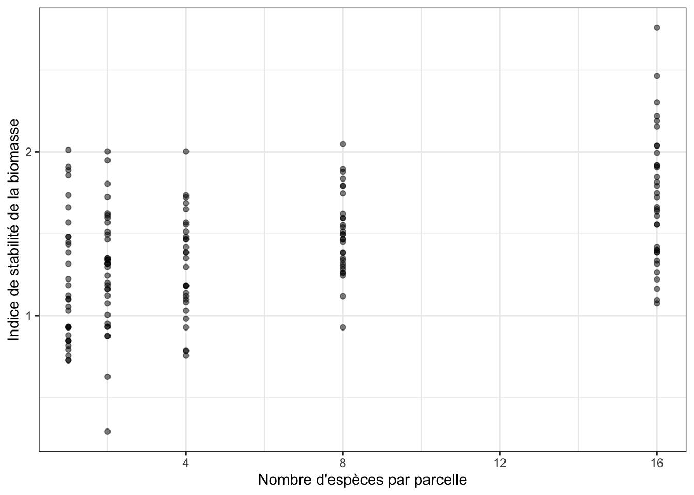
Ce graphique nous apprend que contrairement à la plupart des méthodes statistiques vues jusqu’ici, il n’est pas nécessaire que les données des variables soient distribuées selon une loi Normale. Ici, nous avons des données qui sont tout sauf normales pour la variable explicative puisque nous avons seulement les entiers 1, 2, 4, 8 et 16. Un histogramme ou une courbe de densité montre que la distribution de cette variable est très loin de la Normalité :
plant %>%
ggplot(aes(x = nSpecies)) +
geom_density(fill = "firebrick2", adjust = 0.2) +
labs(x = "Nombre d'espèces par parcelle",
y = "Densité")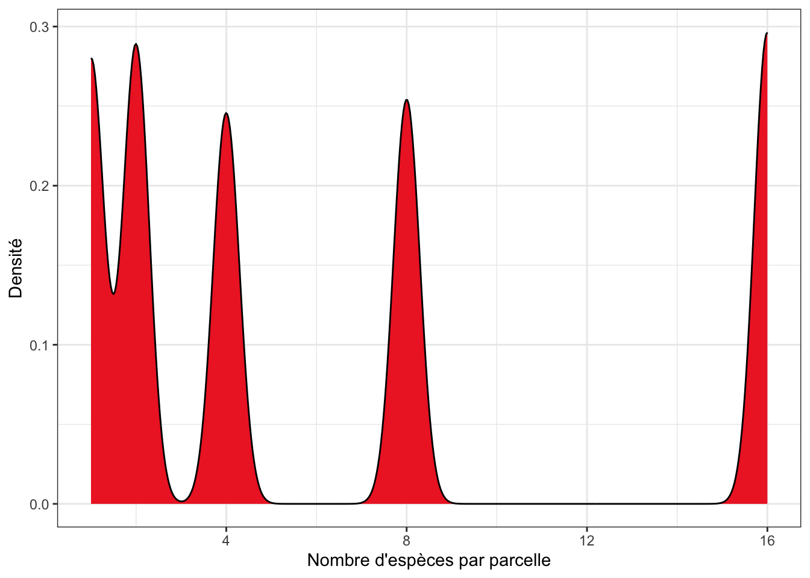
Cela n’est pas du tout problématique : comme pour l’ANOVA, les conditions d’application porteront sur les résidus de la régression, pas sur les variables elles-mêmes. Comme pour l’ANOVA, ce sont les résidus de la régression qui devront suivre une distribution Normale, pas les variables de départ.
On peut visualiser dès maintenant la droite de régression linéaire qui permet de lier ces deux variables grâce à la fonction geom_smooth(method = "lm", se = FALSE)` :
plant %>%
ggplot(aes(x = nSpecies, y = biomassStability)) +
geom_point(alpha = 0.3) +
geom_smooth(method = "lm", se = FALSE) +
labs(x = "Nombre d'espèces par parcelle",
y = "Transformation log\n de l'indice de stabilité de la biomasse")`geom_smooth()` using formula = 'y ~ x'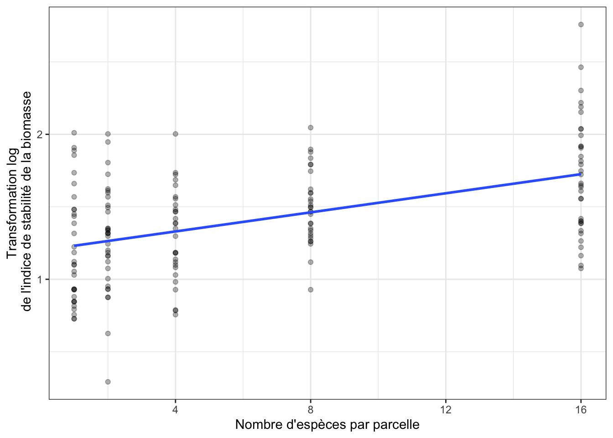
L’argument method = "lm" indique qu’on souhaite ajouter une droite de régression sur le graphique, et se = FALSE permet de ne faire apparaître que la droite de régression, sans son intervalle d’incertitude. Nous reviendrons sur la notion d’incertitude de la régression un peu plus loin.
À supposer que nous ayons le droit d’effectuer une régression linéaire (ce qu’il faudra vérifier avec les conditions d’application, après avoir fait la régression), la pente devrait être positive.
5.4.6 Le test paramétrique
5.4.6.1 Les hypothèses
À une exception près, la procédure de régression linéaire est en tous points identique à l’analyse de variance. Quand on fait une ANOVA, la variable expliquée est numérique et la variable explicative est catégorielle (c’est un facteur). Dans RStudio, la formule ressemble donc à ceci :
\[Y \sim F\]
Quand on fait une régression linéaire, les 2 variables sont numériques. La formule dans `RStudio ressemble donc à ça :
\[Y \sim X\]
Dans ces formules, Y est la variable numérique expliquée, F est une variable catégorielle (ou facteur) et X est une variable numérique explicative. La forme est donc très proche, et tout le reste est identique : on exprime la variable expliquée en fonction de la variable explicative et on vérifie après coup, grâce aux résidus, si nous avions le droit ou non de faire l’analyse.
La différence majeure entre ANOVA et régression linéaire concerne les hypothèses du test. Faire une régression linéaire revient en effet à effectuer en même temps 2 tests d’hypothèses indépendants : le premier concerne l’ordonnée à l’origine de la droite de régression et le second concerne la pente de la droite de régression. On ne parle donc plus de comparer des moyennes entre groupes : on cherche à déterminer si la pente et l’ordonnée à l’origine de la meilleure droite de régression possible valent zéro ou non. Les hypothèses de ces tests sont les suivantes :
Pour l’ordonnée à l’origine (“intercept” en anglais) :
- H\(_0\) : l’ordonnée à l’origine de la droite de régression vaut 0 dans la population générale.
- H\(_1\) : l’ordonnée à l’origine de la droite de régression est différente de 0 dans la population générale.
Pour la pente (“slope” en anglais) :
- H\(_0\) : la pente de la droite de régression vaut 0 dans la population générale. Autrement dit, il n’y a pas de lien entre les deux variables.
- H\(_1\) : la pente de la droite de régression est différente de 0 dans la population générale. Autrement dit, il y a bien un lien entre les deux variables étudiées.
Vous notez qu’ici, comme pour tous les autres tests statistiques traités dans ce livre en ligne, les tests ne permettent que de rejeter ou non les hypothèses nulles. Si on rejette ces hypothèses, le test ne nous dit rien de la valeur de la pente et de l’ordonnée à l’origine. On sait que ces paramètres sont significativement différents de zéro, mais rien de plus. Il faudra alors recourir à l’estimation pour déterminer la valeur de ces paramètres, ainsi que leurs intervalles d’incertitude.
5.4.6.2 Réalisation du test
Pour faire une régression linéaire dans RStudio, on utilise la fonction lm() (comme linear model). Et comme pour l’ANOVA, les résultats de l’analyse doivent être stockés dans un objet puisque cet objet contiendra tous les éléments utiles pour vérifier les conditions d’application :
reg1 <- lm(biomassStability ~ nSpecies, data = plant)Comme pour l’ANOVA, on affiche les résultats de ces tests à l’aide de la fonction summary()
summary(reg1)
Call:
lm(formula = biomassStability ~ nSpecies, data = plant)
Residuals:
Min 1Q Median 3Q Max
-0.97148 -0.25984 -0.00234 0.23100 1.03237
Coefficients:
Estimate Std. Error t value Pr(>|t|)
(Intercept) 1.198294 0.041298 29.016 < 2e-16 ***
nSpecies 0.032926 0.004884 6.742 2.73e-10 ***
---
Signif. codes: 0 '***' 0.001 '**' 0.01 '*' 0.05 '.' 0.1 ' ' 1
Residual standard error: 0.3484 on 159 degrees of freedom
Multiple R-squared: 0.2223, Adjusted R-squared: 0.2174
F-statistic: 45.45 on 1 and 159 DF, p-value: 2.733e-10Dans la forme, ces résultats sont très proches de ceux de l’ANOVA. La rubrique Residuals donne des informations sommaires sur les résidus. Ces informations sont utiles puisque les résidus serviront à vérifier les conditions d’application de la régression. À ce stade, on regarde surtout si la médiane des résidus est proche de 0 et si les résidus sont à peu près symétriques (les premier et troisième quartiles ont à peu près la même valeur absolue, idem pour le minimum et le maximum).
Le tableau Coefficients est celui qui nous intéresse le plus puisqu’il nous fournit, outre la réponse aux 2 tests, les estimations pour l’ordonnée à l’origine et la pente de la droite de régression.
Avant d’aller plus loin dans l’interprétation de ces résultats, il nous faut déterminer si nous avions bel et bien le droit de réaliser cette régression, en vérifiant si ses conditions d’application sont remplies.
5.4.6.3 Conditions d’application
Les conditions d’application de la régression sont les mêmes que celles de l’ANOVA. Je vous renvoie donc à la Section 4.6.2 pour savoir quelles sont ces conditions d’application et comment les vérifier. J’insiste bien sur le fait que les conditions d’application sont absolument identiques à celles de l’ANOVA. Si je fais ici l’économie de la description, vous ne devez jamais faire l’économie de la vérification des conditions d’application.
par(mfrow = c(2, 2))
plot(reg1)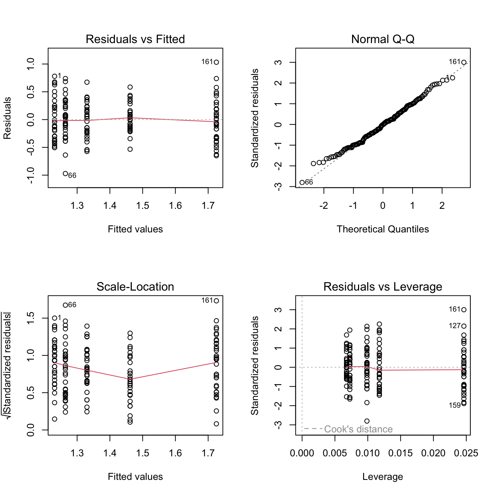
par(mfrow = c(1, 1))C’est seulement après avoir réalisé, examiné et commenté ces graphiques que vous serez en mesure de dire si oui ou non vous aviez le droit de faire la régression linéaire, et donc d’en interpréter les résultats.
Ici, les conditions d’application semblent tout à fait remplies :
- Les deux graphiques de gauche confirment que les résidus sont homogènes. En particulier, sur le premier graphique (en haut à gauche), la ligne rouge est presque parfaitement horizontale, il y a à peu près autant de résidus au-dessus qu’en dessous de la ligne pointillée, et les résidus pourraient rentrer dans une boîte ayant la même hauteur d’un bout à l’autre du graphique (pas d’effet “entonnoir” ou “nœud papillon”).
- Le graphique quantile-quantile (en haut à droite), montre des points qui sont presque parfaitement alignés sur la droite pointillée, indiquant des résidus distribués selon une distribution Normale.
On pourrait vérifier ces éléments avec des tests statistiques (encore une fois, reportez vous à la Section 4.6.2 si vous ne vous rappelez plus comment faire), mais c’est ici inutile tant les conditions semblent bien respectées.
Le dernier graphique (en bas à droite, “Residuals vs Leverage”) ne permet pas de vérifier les conditions d’application à proprement parler, mais permet de repérer des points ayant un poids trop important dans l’analyse. Ces points devraient être retirés s’il y en a (ce qui n’est pas le cas ici), car leur influence est tellement forte qu’ils faussent grandement les résultats de l’analyse. Pour voir à quoi ce graphique ressemble quand de tels points sont présents, je représente ci-dessous un exemple fictif.
Imaginez un jeu de données dans lequel absolument aucune tendance n’est présente. Le nuage de points d’un tel jeu de données devrait être approximativement circulaire, avec une droite de régression presque horizontale, indiquant une absence de lien entre les 2 variables étudiées x et y :
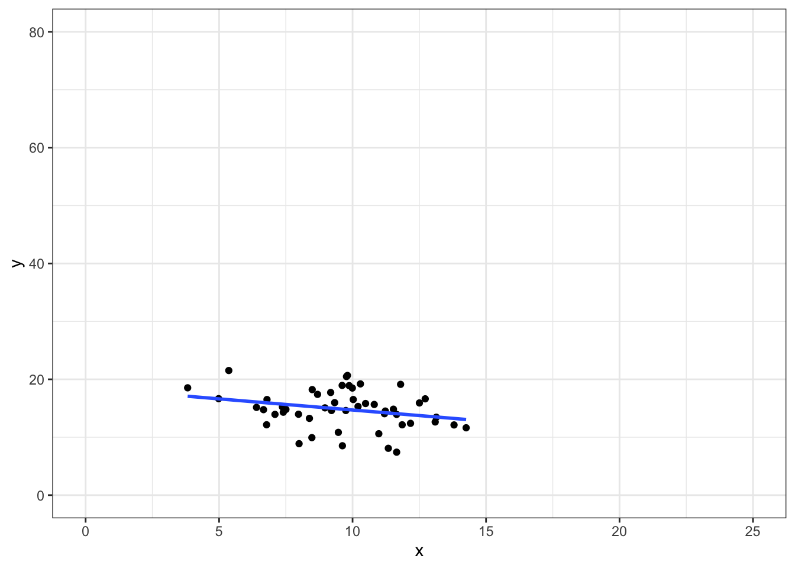
Imaginez maintenant qu’on ajoute à ces données un unique point (en rouge sur le graphique), très éloigné des autres :
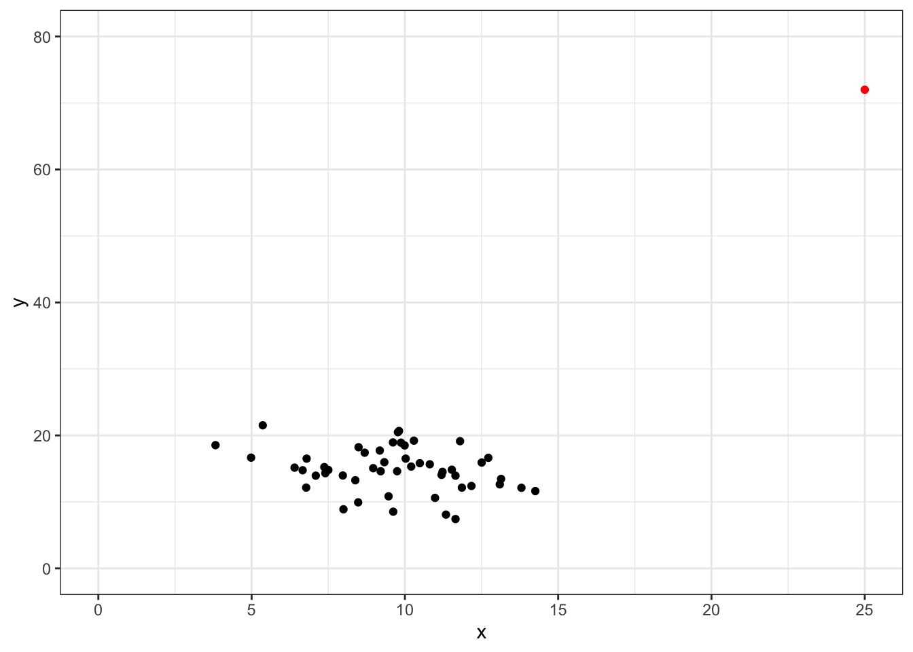
La seule présence de ce point modifierait très fortement les résultats de la régression linéaire :
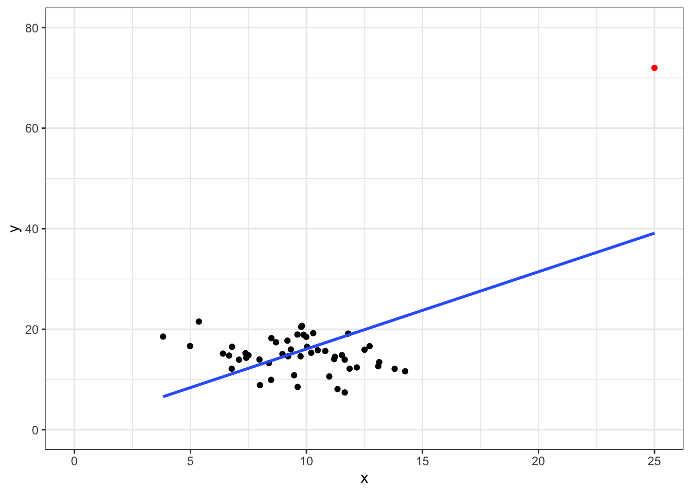
Sans ce point supplémentaire, la droite de régression a une pente légèrement négative, avec ce point, la pente est fortement positive. Il n’est pas normal qu’une observation unique prenne le pas sur toutes les autres (il y en a 50) et qu’elle affecte autant les résultats de la régression. la situation est ici caricaturale, et on voit bien qu’il faudrait retirer la valeur atypique pour obtenir des résultats censés. Les points ayant une influence démesurée sur les résultats ne sont pas toujours aussi évidents à repérer. C’est justement à cela que sert le graphique “Residuals vs Leverage” :
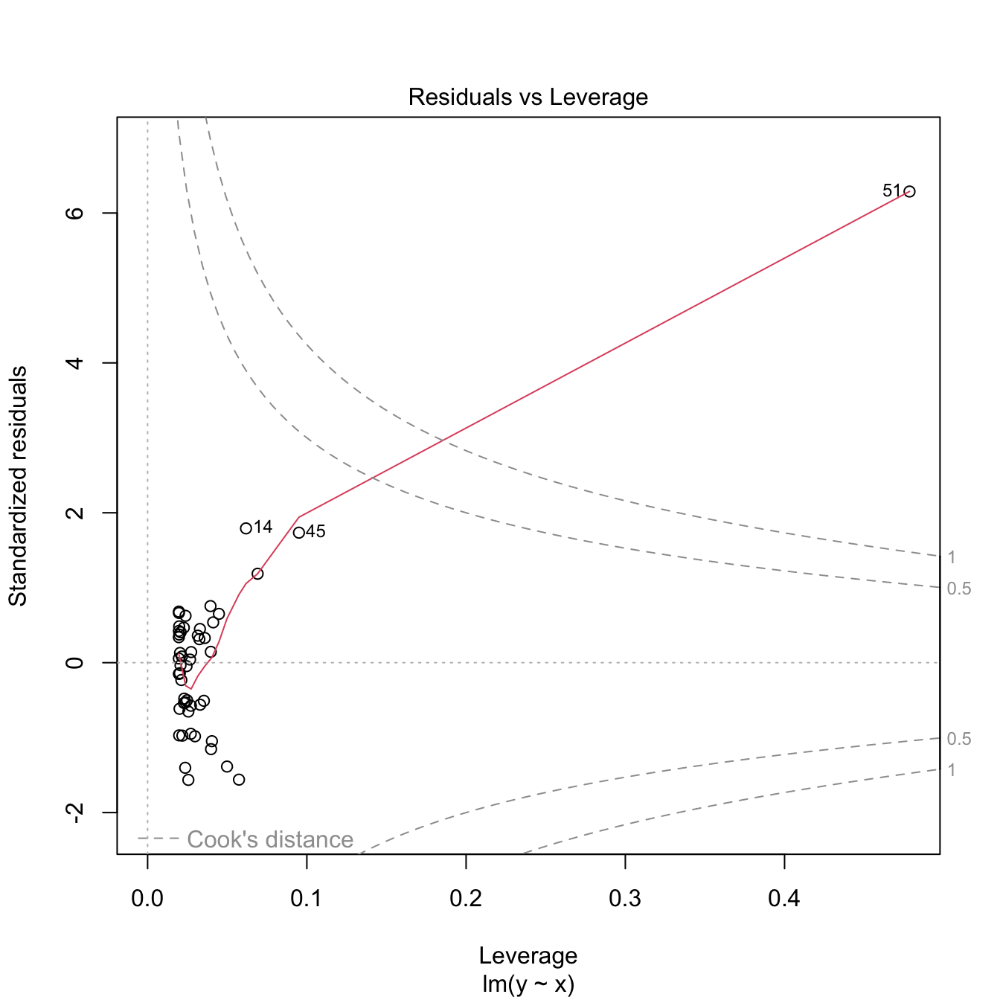
Sur ce graphique, les points qui apparaissent au-delà des lignes pointillées (en haut à droite ou en bas à gauche du graphique) sont ceux qui ont une influence trop forte sur les résultats et qu’il faudrait donc retirer des données pour obtenir des résultats plus représentatifs de la tendance observée pour la majorité des points.
Si je reviens à nos données de stabilité des biomasses en fonction du nombre d’espèces par parcelles, les lignes courbes pointillées qui délimitent les zones “à problème” ne sont même pas visibles sur le graphique. Nous n’avons donc pas de points problématiques.
Au final, les conditions d’application de la régression sont parfaitement vérifiées et nous pouvons donc en interpréter les résultats.
5.4.6.4 Interprétation des résultats
Revenons donc à l’affichage des résultats :
summary(reg1)
Call:
lm(formula = biomassStability ~ nSpecies, data = plant)
Residuals:
Min 1Q Median 3Q Max
-0.97148 -0.25984 -0.00234 0.23100 1.03237
Coefficients:
Estimate Std. Error t value Pr(>|t|)
(Intercept) 1.198294 0.041298 29.016 < 2e-16 ***
nSpecies 0.032926 0.004884 6.742 2.73e-10 ***
---
Signif. codes: 0 '***' 0.001 '**' 0.01 '*' 0.05 '.' 0.1 ' ' 1
Residual standard error: 0.3484 on 159 degrees of freedom
Multiple R-squared: 0.2223, Adjusted R-squared: 0.2174
F-statistic: 45.45 on 1 and 159 DF, p-value: 2.733e-10Outre une description synthétique de la distribution des résidus, ces résultats nous apprennent que :
- l’ordonnée à l’origine (intercept) est estimée à 1.198 (rappelez-vous que cette valeur fait référence à l’indice de stabilité de la biomasse)
- la pente est estimée à 0.033 (quand le nombre d’espèces augmente d’une unité, l’indice de stabilité de la biomasse augmente de 0.033 unités)
Les \(p-\)values de chacun des 2 tests sont fournies dans la dernière colonne et sont ici très inférieures à \(\alpha\) : on rejette donc les 2 hypothèses nulles. En particulier, puisque l’hypothèse nulle est rejetée pour le test qui concerne la pente de la droite, on peut considérer que le nombre de plantes dans les parcelles influence bel et bien l’indice de stabilité de la biomasse. Autrement dit, le nombre de plantes dans les parcelles, permet, dans une certaine mesure, de prédire la valeur de l’indice de stabilité de la biomasse.
La relation n’est toutefois pas très forte : le nombre de plantes dans chaque parcelle ne permet de prédire l’indice de stabilité de la biomasse que dans une mesure assez faible. C’est le Adjusted R-squared qui nous indique quelle est la “qualité” de prédiction du modèle. Ici, il vaut 0.22. Cela signifie que 22% des variations de l’indice de stabilité de la biomasse sont prédits par le nombre de plantes dans les parcelles. Une autre façon de présenter les choses consiste à dire que 78% des variations de l’indice de stabilité de biomasse sont expliqués par d’autres facteurs que celui que nous avons pris en compte dans notre modèle de régression linéaire (i.e. le nombre d’espèces par parcelle). Le \(R^2\) (à en pas confondre avec le coefficient de corrélation \(r\)) renseigne sur la qualité de l’ajustement des données à la droite de régression. Il nous indique ici que le pouvoir prédictif de notre modèle linéaire est assez faible. Il est néanmoins significatif, ce qui indique que notre variable explicative joue bel et bien un rôle non négligeable dans les variations de la variable expliquée. Une autre façon de comprendre ce résultat est la suivante : si on connait le nombre de plantes dans une parcelle, on peut prédire 22% de la valeur de l’indice de stabilité de la biomasse.
5.4.6.5 Intervalle de confiance de la régression
L’équation de notre droite de régression vaut donc :
\[ y = 0.033 \times x + 1.198\]
Avec y, l’indice de stabilité de la biomasse, et x, le nombre d’espèces par parcelles. On voit bien que la droite nous permet de prédire une valeur d’indice de stabilité de la biomasse pour un nombre d’espèces donnée par parcelle, y compris pour des nombres d’espèces qui n’ont pas été testés. par exemple, pour $n = $ 6 espèces, on peut s’attendre à un indice de stabilité de la biomasse de \(0.033 * 6 + 1.198 = 1.396\). Il convient toutefois de prendre deux précautions très importantes quand on fait ce genre prédiction :
la régression et son équation ne sont valables que sur l’intervalle que nous avons étudié pour la variable explicative. Ainsi, on peut faire des prédictions pour des valeurs de nombre d’espèces comprises entre 1 et 16, mais pas au-delà. En effet, rien ne nous dit que cette relation reste valable au-delà de la gamme \(n =\) [1 ; 16]. Peut-être la relation change-t-elle de nature à partir de \(n =\) 20 espèces par parcelles. Peut-être que la pente devient nulle ou négative. Ou peut-être la relation n’est-elle plus linéaire au-delà de \(n =\) 16 espèces par parcelle. En bref, puisque nous n’avons des informations sur le comportement de notre système d’étude que pour une gamme de valeurs précises sur l’axe des
x, il nous est impossible de prédire quoi que ce soit en dehors de cette gamme de valeurs.Même à l’intérieur de la gamme de valeur permettant de faire des prédictions, toute prédiction est entachée d’incertitude. Pour s’en convaincre, il suffit de regarder la grande dispersion des valeurs observées pour
ypour chaque valeur dex. Par exemple, pour $n = $ 8 espèces par parcelle, les valeurs observées pour l’indice de stabilité vont de moins de 1 à plus de 2. Le modèle prédit une valeur d’environ 1.46 (\(0.033 * 8 + 1.198 = 1.462\)), mais on voit bien que l’incertitude persiste. C’est la raison pour laquelle on aura toujours besoin de calculer des indices d’incertitude, pour avoir une idée de l’erreur commise lorsque l’on fait une prédiction.
Prudence avec les prédictions
Une droite de régression permet de faire des prédictions :
- uniquement sur la gamme de valeurs de l’axe des
xqui a permis d’établir l’équation de la droite de régression - avec une imprécision/incertitude qu’il est toujours nécessaire d’estimer.
La pente et l’ordonnée à l’origine de cette droite de régression ont été obtenues à partir des données d’un échantillon (ici, \(n =\) 161 parcelles). Il s’agit donc d’estimations des pentes et ordonnées à l’origine de la relation plus générale qui concerne la population globale, mais que nous ne connaîtrons jamais avec précision. Comme toute estimation, les valeurs de pente et d’ordonnée à l’origine de la droite de régression sont entachées d’incertitude. Nous pouvons quantifier ces incertitudes grâce au calcul des intervalles de confiance à 95% de ces 2 paramètres :
confint(reg1) 2.5 % 97.5 %
(Intercept) 1.11673087 1.27985782
nSpecies 0.02328063 0.04257117Ces résultats nous indiquent que les valeurs d’ordonnées à l’origine les plus probables dans la population générale sont vraisemblablement comprises entre 1.117 et 1.280. De même, les valeurs de pentes les plus probables dans la population générale sont vraisemblablement situées dans l’intervalle [0.023 ; 0.043]. Autrement dit, pour la pente de la droite de régression, la meilleure estimation possible vaut 0.033, mais dans la population générale, les valeurs comprises dans l’intervalle [0.023 ; 0.043] sont parmi les plus probables.
Il est possible de visualiser cette incertitude grâce à la fonction geom_smooth() utilisée plus tôt, en spécifiant se = TRUE :
plant %>%
ggplot(aes(x = nSpecies, y = biomassStability)) +
geom_point(alpha = 0.3) +
geom_smooth(method = "lm", se = TRUE) +
labs(x = "Nombre d'espèces par parcelle",
y = "Transformation log\n de l'indice de stabilité de la biomasse") +
scale_y_continuous(breaks = seq(0, 3, 0.25))`geom_smooth()` using formula = 'y ~ x'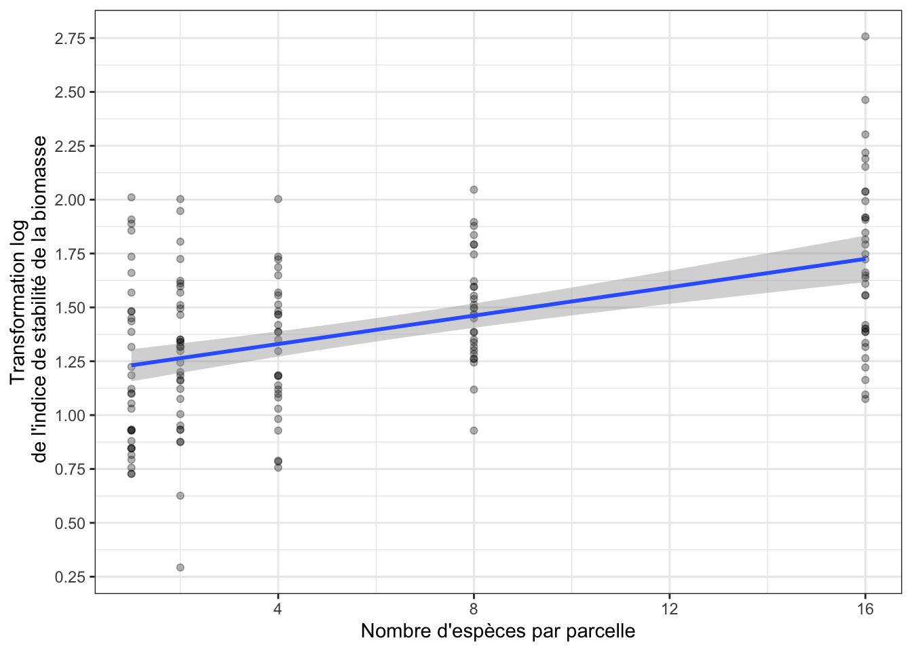
Dans la population générale, la vraie droite de régression peut se trouver n’importe où dans la bande grise. Cet intervalle d’incertitude est bien moins large que l’étendue des données sur l’axe des ordonnées, et c’est tant mieux. Il correspond à l’incertitude de la moyenne de l’indice de stabilité de la biomasse pour une valeur donnée de la variable explicative. Ainsi, par exemple, si on réalise une expérience avec plusieurs parcelles contenant toutes 8 espèces, alors, la régression et son incertitude associée nous disent que **la moyenne* de l’indice de stabilité de la biomasse vaudra environ 1.46 (la valeur de la droite de régression pour x = 8), avec un intervalle de confiance à 95% de [1.40 ; 1.51] (l’étendue de la zone grisée autour de la courbe pour \(n =\) 8 espèces.
5.4.7 L’alternative non paramétrique
Lorsque les conditions d’application de la régression linéaire ne sont pas vérifiées, on a principalement deux options :
- On essaie de transformer les données afin que les résidus de la régression se comportent mieux. Cela signifie tester différents types de transformations (passage au logarithme, à l’inverse, à la racine carrée…), ce qui peut être chronophage pour un résultat pas toujours garanti. Il existe de très nombreuses transformations et trouver la meilleure n’est pas trivial. Par ailleurs, l’interprétation d’une relation linéaire impliquant des données transformées n’est pas toujours aisée.
- On utilise d’autre types de modèles de régression, en particulier les modèles de régressions linéaires généralisées (GLM), qui s’accommodent très bien de résidus non normaux et/ou non homogènes. Ces méthodes sont aujourd’hui préférées à la transformation des données et elles donnent de très bons résultats. Mais il s’agit là d’une toute autre classe de méthodes qui ne sont pas au programme de la licence.
5.5 Exercices
5.5.1 Datasaurus et Anscombe
Exécutez les commandes suivantes :
library(datasauRus)
datasaurus_dozen %>%
group_by(dataset) %>%
summarize(
moy_x = mean(x),
moy_y = mean(y),
ecart_type_x = sd(x),
ecart_type_y = sd(y),
correl_x_y = cor(x, y),
pente = coef(lm(y~x))[2],
ordonnee_origine = coef(lm(y~x))[1]
)Examinez attentivement les nombreux résultats produits par cette commande. Vous devriez remarquer que pour ces 13 jeux de données, 2 variables numériques x et y sont mises en relation. Pour tous ces jeux de données, on observe que la moyenne de tous les x est la même, la moyenne de tous les y est la même, les écarts-types des x sont identiques, les écarts-types des y aussi, la corrélation entre x et y est également extrêmement proche pour tous les jeux de données, et lorsque l’on effectue une régression linéaire de y en fonction de x, les ordonnées à l’origine et les pentes des droites de régression sont extrêmement proches pour les 13 jeux de données.
Si on s’en tient à ces calculs d’indices synthétiques, on pourrait croire que ces jeux de données sont identiques ou presque. Pourtant, ce n’est pas par hasard que je vous répète à longueur de temps qu’il est indispensable de regarder les données avant de se lancer dans les analyses et les statistiques. Car ici, ces jeux de données sont très différents ! Conclure qu’ils sont identiques simplement parce que les statistiques descriptives sont égales, serait une erreur majeure :
datasaurus_dozen %>%
ggplot(aes(x, y, color = dataset)) +
geom_point(show.legend = FALSE) +
facet_wrap(~dataset, ncol = 3) +
theme_bw()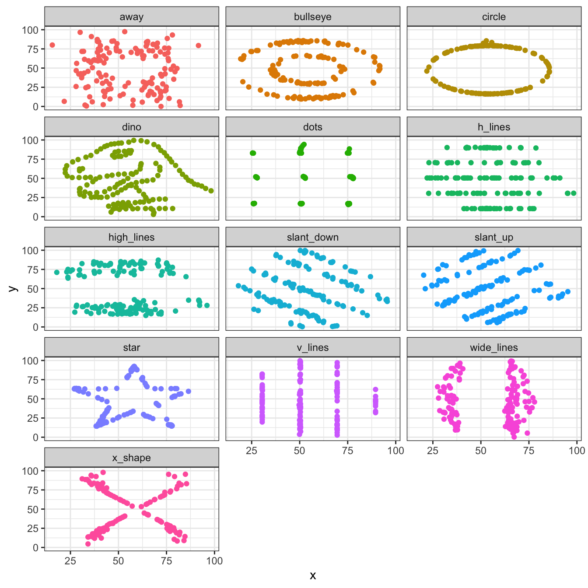
Le quartet d’Anscombe est un autre exemple de ce type de problème.
Dans la console, exécutez la commande suivante (il vous faudra peut-être presser la touche Entrée plusieurs fois) pour produire les 4 graphiques d’Anscombe :
example(anscombe)Examinez attentivement les nombreux résultats produits par cette commande dans la console, ainsi que les 4 graphiques obtenus. Vous devriez remarquer que pour ces 4 jeux de données, 2 variables numériques sont là encore mises en relation, et qu’elles présentent toutes les mêmes caractéristiques. En particulier, les régressions linéaires ont toutes les mêmes pentes et ordonnées à l’origine. Pourtant, seule l’une de ces régressions linéaires est valide. Pourquoi ?
5.5.2 In your face
Les hommes ont en moyenne un ratio “largeur du visage sur longueur du visage” supérieur à celui des femmes. Cela reflète des niveaux d’expression de la testostérone différents entre hommes et femmes au moment de la puberté. On sait aussi que les niveaux de testosterone permettent de prédire, dans une certaine mesure, l’agressivité chez les mâles de nombreuses espèces. On peut donc poser la question suivante : la forme du visage permet-elle de prédire l’agressivité ?
Pour tester cela, Carré et McCormick (2008) ont suivi 21 joueurs de hockey sur glace au niveau universitaire. Ils ont tout d’abord mesuré le ratio largeur du visage sur longueur du visage de chaque sujet, puis, ils ont compté le nombre moyen de minutes de pénalité par match reçu par chaque sujet au cours de la saison, en se limitant aux pénalités infligées pour cause de brutalité. Les données sont fournies dans le fichier hockey.csv.
Importez, examinez et analysez ces données pour répondre à la question posée.